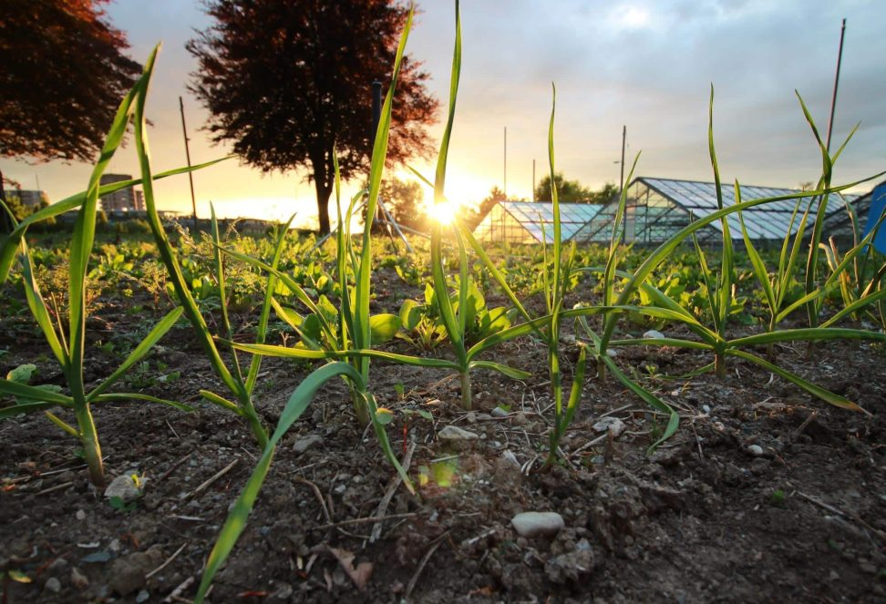

PURE ROOT SWITZERLAND
Auf São Miguel (Azoren) setze ich zusammen mit einem heimischen Bio-Bauern (Paolo) und mit Unterstützung der Universidade dos Açores ein langfristiges Bio-Ingwerprojekt um. Wir beginnen mit einem nachhaltigen Testanbau – mit dem Ziel, später frischen Bio-Ingwer aus europäischer Nähe in die Schweiz zu liefern.
 Lokale Partnerschaft
Lokale PartnerschaftIngwer ist eine der kraftvollsten Pflanzen der Natur – warm, aromatisch und voller Energie. Die Azoren bieten außergewöhnliche Bedingungen, sodass er dort besonders frisch und hochwertig wächst.
Für mich steht Ingwer für Natur, Stärke und einen positiven Neubeginn. Darum baue ich gemeinsam mit einem lokalen Bio-Bauern (Paolo) und mit Unterstützung der Universidade dos Açores einen nachhaltigen Testanbau auf – Schritt für Schritt.
Alle Details findest du auf der Crowdfunding-Seite.
